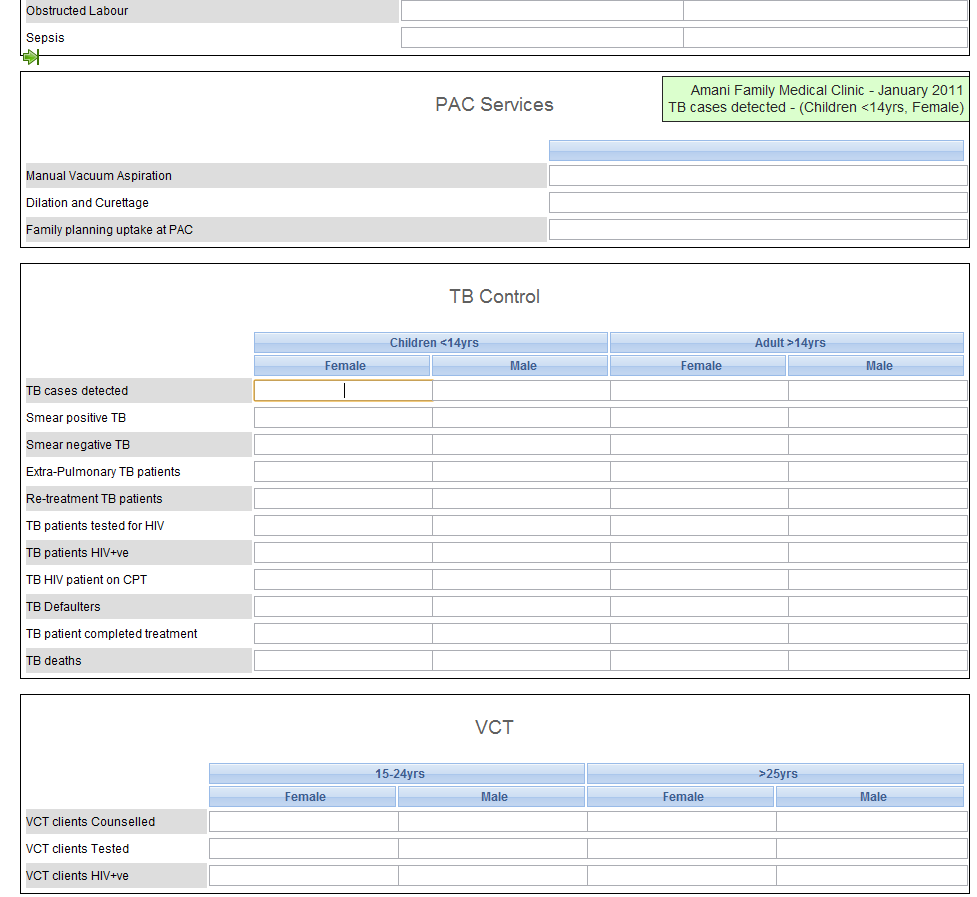

Section forms are separated automatically by data element category combinations, which produce a spreadsheet like data entry form for each section.
Set up your data set as described in Section 6.1, “About data sets and data entry forms”
Open the Data Set Section window by selecting your data set followed by the "View sections" option from the context menu. To add a new section to a section form choose the specific category combo and press "Add new". You can now add data elements from the "Available data element" list on the left to the "Selected data elements" list on the right. Data elements can be sorted within the section with the use of the "Move up" and "Move down"
 buttons. Be sure to press "Save" once you have finished.
buttons. Be sure to press "Save" once you have finished.![[Note]](resources/images/admon/note.png)
Note You can only use one data element category combination per section.
You may need to control how the data element sections are displayed on the final form. In the Data set Section management, leave [All] in the "Select Category Combo" drop-down. Click on "Sort section" to sort the order of appearance of your sections in the data entry form.
In Data Entry you can now start using the Section form (which will appear automatically when sections are available for the selected data set). Data sets which have section forms will automatically display the section form.
Certain data elements may need to be disabled for data entry. Within Data set section management, choose the section which contains these data elements and select Section grey field management from the context window. Pressing the "Disable" button will prevent data from being entered into this specific data element/category option during data entry. Be sure to press "Done" to save your changes.
A sample section form is displayed in the next figure. Notice how each data element category has been separated into a separate section, and a data entry table has been automatically generated by the system. Use of section forms in combination with data element categories can drastically reduce the amount of time which is required to create data entry forms for data sets.
Section form example
|  |